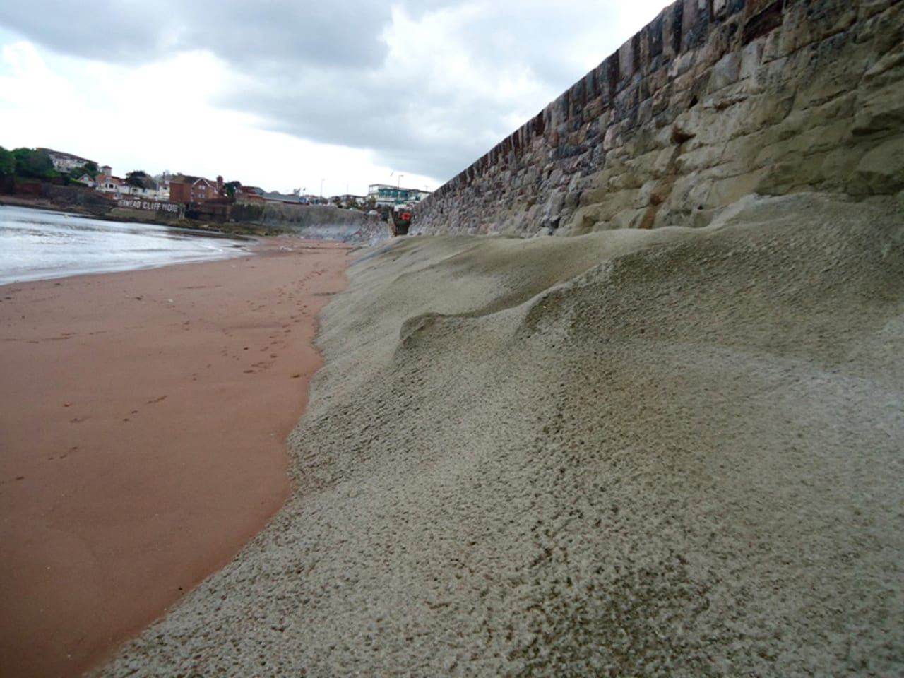

The sea wall carries Torbay Road between Livermead Head and Corbyn Head, and protects the coast from the tide and waves.
- Client
- Torbay Council
- CASE role
- Inspection, co-ordination of the emergency repairs, permanent works design and contract administration
- Contract value
- £0.5m
We first inspected the wall, a limestone block retaining wall about 130 years old, and found widespread voids in its revetment. The planned repairs were rock armour along part of the wall, with the larger voids filled with placed mass concrete and sprayed concrete.
Sustained easterly storms then breached the wall and washed out the fill behind it. The rising main in the footpath was damaged and the gas main was at risk.
Sheet piles were driven over a 15 m length on the road side of the footpath to support the highway and protect the gas main. Steel shuttering on the seaward face was tied back to the piles with welded bar. Mass concrete was placed under and behind the wall up to the invert of the repaired rising main, and foam concrete brought the fill up to road level once South West Water had repaired the pipe. At the breach, the seaward face was sprayed with concrete reinforced with galvanised mesh on drilled and grouted dowel bars.
